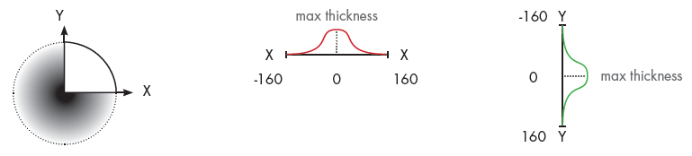
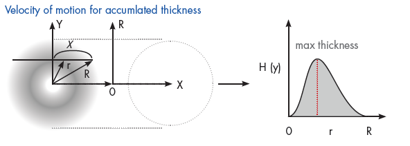
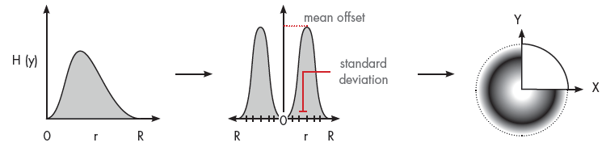
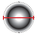

Painting
The Paint add-on allows you to prepare, simulate and analyze the results of paint processes using a robot and paint gun.
Enable Add-on
The Paint add-on can be turned on/off using a backstage option.
- Click the File tab, and then on the Navigation pane, click Options.
- Click Add On, and then in Paint, do one of the following:
- To enable the add-on, click Enable.
- To disable the add-on, click Disable.
Access Paint View
The Paint add-on and its commands can be accessed from a contextual Paint tab that appears when you are programming a robot.
- Click the Program tab, and then under Paint Tools, click the Paint tab.
Prepare Components
If you want to paint a component, you need to prepare its geometry, material and surface for painting.
Level of Detail
The geometry of a component can be tessellated to a desired level of detail for applying paint.
- On the Paint tab, in the Prepare Geometry group, click Prepare Components for Painting.
- In the 3D world, directly select the component(s) you want to paint during a simulation.
- In the Prepare for Painting task pane, set Max Edge Length to the desired value, and then click Prepare Selected Components.
Coating
The material of a prepared component is defined by a color map that assigns materials to geometry based on paint thickness. Generally, a prepared component has no paint, so its material is the material mapped to a paint thickness of zero.
- On the Paint tab, in the Show Paint group, click Edit Color Maps.
- In the Color Maps Editor task pane, Map table, find the row with a paint thickness of 0, and then set its Color field to the desired material.
Masking
Any surface area of a prepared component that is covered by another component will not be painted with some exceptions. The level of detail in a prepared component can affect paint bleeding in which the edges of masked areas are not clean and contain some paint. Generally, this occurs when the edge length of component geometry is too long. Some paint guns might not support ambient occlusion, so masked areas would still be painted.
Define Visualization of Paint
During a simulation, a paint gun will dynamically add texture coordinates to the geometry of prepared components. These coordinates are used to define the thickness of paint on surfaces. That means you can change the visualization of paint before and after it has been rendered in the 3D world.
Color Mapping
There are two modes for visualizing paint on surfaces. One mode is to use a gradient of colors mapped to paint thickness values. This would blend colors and visualize the application of paint like in the real world. Another mode is to use colors mapped to intervals of paint thickness values. This would allow you to clearly delimit paint thickness on surfaces. For example, a surface area with a paint thickness value of X could be assigned a material of Y according to these rules: X<=0, Y is white; 0<X<=0.5, Y is blue; and 0.5<X<=1, Y is red.
- On the Paint tab, in the Show Paint group, click Edit Color Maps.
- In the Color Maps Editor task pane, set Map to one of the following:
- To define settings for visualizing paint with a color gradient, click Color paint visualization.
- To define settings for visualizing paint with a color interval, click Thickness paint visualization.
- In the Map table, do one or more of the following:
- To edit a mapping, find the row you want to edit, and then edit the fields of that row.
- To delete a mapping, find the row you want to remove, and then in the Paint Thickness field, click the Trash icon.
- To add a mapping, edit the last row of the table. Every valid row must have a defined paint thickness value.
Rendering
The rendering of the 3D world will affect the visualization of paint but not its color. You can toggle between different color modes at any time and show/hide paint on surfaces.
- On the Paint tab, in the Show Paint group, do one of the following:
-
- To not show any paint, select None.
- To show paint using a color gradient, select Color.
- To show paint using a color interval, select Thickness.
Measure Paint Thickness
A Paint Thickness tool can be used to measure and record the thickness of paint at any surface point of a painted component. By default, paint thickness is measured in microns or micrometers (μm).
- On the Paint tab, in the Measure group, click Paint Thickness.
- In the 3D world, do one of the following:
- To display a measurement, point at a painted surface.
- To record a measurement, click a point on a painted surface. This adds a temporary annotation for that point of measurement.
Remove Paint
Paint can be removed from a component. That is, you can remove texture coordinates added to component geometry by a paint gun.
- On the Paint tab, in the Remove Paint group, do one of the following:
-
- If you want to remove paint from a selected component, click Selected. You would need to first select the component in the 3D world, and then use the Selected command to remove the paint.
- If you want to remove paint from all components in the 3D world, click All. Remember, this only affects components that were prepared for painting.
- If you want to automatically remove all paint when you reset a simulation, select the Remove on Reset check box.
- If you do not want to remove any paint when you reset a simulation, clear the Remove on Reset check box.
Paint Distribution and Simulation
A paint gun is a component that can add paint to components during a simulation. Generally, all paint guns have somewhat similar properties. Refer to this section as needed when using any paint gun.
Simulation Properties
Some properties of a paint gun define how often painting is updated in the 3D world during a simulation. Other properties define the minimum and maximum distances for paint to be rendered given the distance of gun nozzle from a surface.
- Refresh Rate - The frequency (Hz) of calculating paint distribution during a simulation. A higher frequency yields a more detailed simulation, yet slower rendering of paint distribution. Generally, this was an issue in previous product versions, so newer paint gun models might not have this property.
- Spray Min Distance - The minimum distance at which paint is distributed on a surface. In most cases, a Frame feature is used to show this distance in the 3D world.
- Spray Max Distance - The maximum distance at which paint is distributed. In most cases, a Frame feature is used to show this distance in the 3D world. Paint is distributed on surfaces within the defined min and max spray distances.
Calibration Properties
A paint gun is calibrated to know its a normal distribution of paint using certain properties. Older versions of paint guns required you to perform calibration, but now calibration is handled for you. In most cases, it is assumed a paint gun has a symmetric cone-like shape representing the profile or area of its paint distribution.
- Gun Efficiency - The overall transfer efficiency of paint by the paint gun. A smaller value means less paint is transferred to a surface with respect to time. The unit of this property might be a percentage or scale, for example 50% or 0.5.
- Spray Distance - The distance of the pain gun nozzle from a surface in a robot program. That is, how far the nozzle is from a surface when painting with a robot. Generally, you would already know this distance when teaching a robot or the nominal spraying distance of the paint gun.
Depending on the version of your paint gun, paint is thickest at the mean and less thick for each deviation. Also, a profile distance value may correspond to a thickness value (in microns). Two profiles can be used for non-symmetric or skewed distribution.

A circular thickness pattern is generated using profiles X and Y, which emanate from the center of the circle. The distance values determine the spread and radius of the pattern. The thickness values determine the deposition of paint based on the direction of the radius, for example when a paint gun sweeps across a surface.

A mean offset and standard deviation are calculated for profiles X and Y to properly project the path of paint droplets from their source to a surface. As a result, both affect the distribution of paint for a calculated pattern.

Newer versions of paint guns may allow you to map distance values to a loaded profile image.
Calculated Properties
Some properties of a paint gun can be used to fine tune the distribution of paint.
- Flow Rate - The volume of paint per second (cm^3/s) based on the paint profile and the linear speed and efficiency of the paint gun.
- Spray Diameter X and Spray Diameter Y - The diameter of the spray cone based on X and Y profiles. For example, one profile can be used for symmetric, normal distribution of paint. So if the X value is 160mm, the spray diameter is 320mm.

- Max Display Thickness - Scales the thickness of paint color being used based on paint profile.
- Mean Offset - An offset from the center of paint gun in the direction of its radius, which affects the normal distribution of paint. This affects the paint distribution of a sweep and relates to the arc paint travels from the paint gun to a surface.